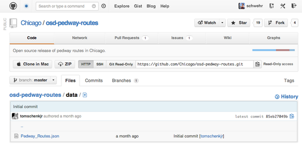
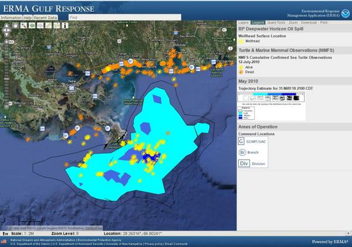
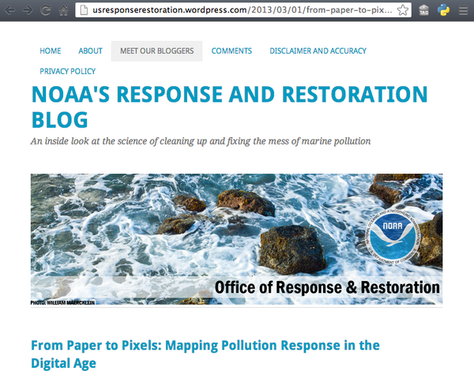
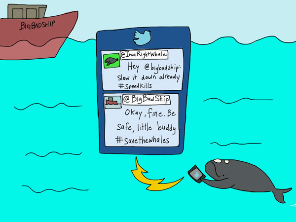
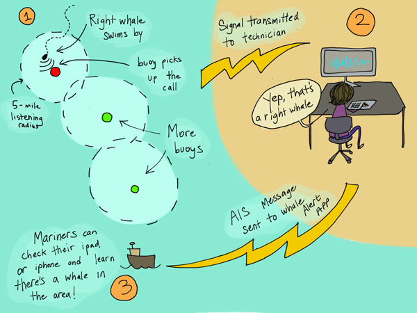

03.24.2013 23:41
PyCon 2013 videos online
Today, Trey made a post about the
Best
Talks at PyCon US 2013. I didn't make it to pycon (other than
stopping by a sprint session for an hour), so this is definitely
awesome. The first video that I watched was this:
Log Analysis with Pandas [Taavi's web notes]
Video Link
Next on my list is:
Building an image processing pipeline with Python
I will be following that up with:
Building full-stack scientific applications in Python
IPython and especially the Notebook feature have been awesome additions to my python toolbox. I think that Fernando more than deserves this award... more than a decade in the making.
Fernando Perez, Winner of the 2013 Free Software Foundation Award
Log Analysis with Pandas [Taavi's web notes]
Video Link
Next on my list is:
Building an image processing pipeline with Python
I will be following that up with:
Building full-stack scientific applications in Python
IPython and especially the Notebook feature have been awesome additions to my python toolbox. I think that Fernando more than deserves this award... more than a decade in the making.
Fernando Perez, Winner of the 2013 Free Software Foundation Award
03.15.2013 10:52
Matt Deans on the NASA Exploration Ground Data System (xGDS)
Sadly I was out sick and have to
catch Matt
Deans' talk via youtube. Matt and I worked together at NASA
Ames back in the 90's in what then called the Intelligent
Mechanisms Group (IMG) and is now called the Intelligent Robotics Group
(IRG).
Also, in a frustrating moment, I was talking to someone at the NSF Earth Cube workshop last week at Scripps Institution of Oceanography and they were asking me about Google's tools for education. For some reason I didn't write down which one of the attendies asked me that and Philip's name escaped me during the short time of the conversation. So in the hopes that who ever that was reads my blog, please check out Philip Guo's Google Research page. Philip indroduced me to Course Builder:
Helping the World to Teach [Google Research Blog] by Peter Norvig about Course Builder.
Also, in a frustrating moment, I was talking to someone at the NSF Earth Cube workshop last week at Scripps Institution of Oceanography and they were asking me about Google's tools for education. For some reason I didn't write down which one of the attendies asked me that and Philip's name escaped me during the short time of the conversation. So in the hopes that who ever that was reads my blog, please check out Philip Guo's Google Research page. Philip indroduced me to Course Builder:
Helping the World to Teach [Google Research Blog] by Peter Norvig about Course Builder.
03.05.2013 17:40
Github of databases
I have been talking about a github
like community around databases. Thanks to Dustin Mitchell for
pointing to the city of Chicago's posting of their databases
literally to GiHub.
https://github.com/Chicago/osd-pedway-routes/tree/master/data
https://github.com/Chicago/osd-pedway-routes/tree/master/data

03.05.2013 17:17
ERMA makes the NOAA blog post on ERMA
Back when I was working with Rob
Braswell and Michele Jacobi back 5 or 6 years ago, I really didn't
think that the "Portsmouth Reponse" web app that we were working on
would be come the big deal that is now called ERMA. Pretty
amazing.
From Paper to Pixels: Mapping Pollution Response in the Digital Age [NOAA'S RESPONSE AND RESTORATION BLOG]
From Paper to Pixels: Mapping Pollution Response in the Digital Age [NOAA'S RESPONSE AND RESTORATION BLOG]


03.05.2013 13:09
US Array data compared to model
I am wishing this was around when I
took Peter Shearer's
seismology course at SIO. Left side is the data, right side is a
model for the event. This is from the
IRIS Tutorial Data Visualizations
03.03.2013 19:42
MichelleW post on Whale Alert
I have been enjoying Michelle W's illustrations ever since
she started adding them to her posts. Her topics range from life as
a PhD student to ocean acidification. Now she has done up two about
the Whale Alert project. Thanks Michelle for the post and the
illustrations!
Save the whales? There's an app for that! [Deep Sea News]
If you want to know more, I've made a video that goes through most of it.
Save the whales? There's an app for that! [Deep Sea News]


If you want to know more, I've made a video that goes through most of it.